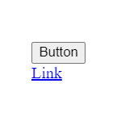

<button > vs <a>
<button>Button</button>
<a href="#">Link</a>
www
x

In HTML zijn zowel de <button>- als <a>-elementen bedoeld om interactieve elementen op een webpagina te creëren, maar ze hebben verschillende doeleinden en gedragingen.
<a>-elementen worden gebruikt om hyperlinks te maken, wat betekent dat het wordt gebruikt om van de ene webpagina naar de andere te linken.<button>-elementen worden meestal gebruikt in formulieren in combinatie met PHP om interactieve functionaliteit aan webpagina’s toe te voegen.
tip
Aangezien de meeste knoppen op webpagina’s dienen om naar andere pagina’s te gaan we meestal <a>-elementen gebruiken.
Een ander voordeel is dat <a>-elementen minder opmaak hebben en dus makkelijker zelf te stylen zijn.
Een link is enkel blauw met een underscore, terwijl een button heeft meer opmaak, en is dus moeilijker zelf te stylen.
www
x
Hover & visited
a:hover {
color: red;
}
a:visited {
color: orange;
}
Hover animaties
a {
transition: 0.5s;
}
a:hover {
color: red;
}
Opdracht: Knoppen ontwerpen
- Maak een website met 3
<a>-elementen en 3<button>-elementen. - Geef elke knop een uniek design.
Op deze pagina kan je informatie vinden over hoe je knoppen kan stylen: https://www.w3schools.com/css/css3_buttons.asp - Gebruik minstens 3 verschillende webfonts.
- Geef elke knop een uniek hover effect.
| Puntenverdeling: knoppen | |
|---|---|
| Je website heeft de juiste structuur (html en body en ...) | 1 |
| Je website heeft een titel en favicon (in het juiste bestandstype) | 1 |
| Je 6 knoppen hebben elk een uniek mooi en uitgebreid design | 3 |
| Je gebruikt minstens 3 verschillende webfonts | 3 |
| Je 6 knoppen hebben elk een uniek mooi en uitgebreid hover en visited effect | 3 |
| Je hover effects maken gebruik van animaties | 1 |
| Totaal | 12 |
Uitdaging: Knop namaken
- Surf naar https://dribbble.com/ en zoek naar het woord button.
- Kies een mooie knop.
- Download de afbeelding of video van de knop en voeg hem toe aan je website.
- Voeg een nieuwe knop toe aan je website, en probeer de knop die je gevonden hebt zo goed mogelijk na te maken.